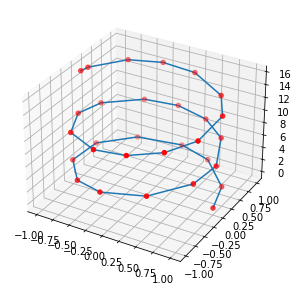

Python Module Overview¶
SimplifyLine does both 2D and 3D line simplication. It operates on contigous buffer array of points, so only c-style numpy arrays. Import as so:
[12]:
import simplifyline
print("My version is {}".format(simplifyline.__version__))
print("My version is {}".format(simplifyline.get_simplifyline_version()))
My version is 0.0.1
My version is SimplifyLine 0.0.1
Now we can use the simplifyline library! Here are the available methods and datastructures:
[2]:
print(dir(simplifyline))
['MatrixDouble', 'VectorDouble', 'VectorInt', 'VectorUInt8', 'VectorULongInt', '__builtins__', '__cached__', '__doc__', '__file__', '__loader__', '__name__', '__package__', '__path__', '__spec__', '__version__', 'get_simplifyline_version', 'pkg_resources', 'simplify_line_2d', 'simplify_line_3d', 'simplifyline_pybind']
[13]:
from simplifyline import MatrixDouble, simplify_line_2d, simplify_line_3d
import matplotlib.pyplot as plt
import time
import numpy as np
2D Lines¶
Here is an example operating on 2D Lines
[36]:
def make_sine_wave(num_points=100, cycles=5):
max_x = np.pi/2.0 * (cycles + 1)
time = np.linspace(0.0, max_x, num_points * cycles)
y = np.sin(time)
return np.column_stack((time, y))
points = make_sine_wave(num_points=10)
plt.plot(points[:, 0], points[:, 1])
plt.scatter(points[:, 0], points[:, 1], c='r')
[36]:
<matplotlib.collections.PathCollection at 0x2ace7b01160>
Now we will simplify these points
[38]:
# We have to "convert" the numpy array to datastructure the library expects. This is a no copy operation.
points_mat = MatrixDouble(points, copy=False)
# Now time the execution and visualize the results
t0 = time.perf_counter()
simplified_mat = simplify_line_2d(points_mat, max_distance=0.1, high_quality=True)
t1 = time.perf_counter()
simplified = np.array(simplified_mat)
print(f"Reduced points from {points.shape[0]} to {simplified.shape[0]}")
print(f"It took {(t1-t0) * 1000:.3f} milliseconds")
plt.plot(simplified[:, 0], simplified[:, 1])
plt.scatter(simplified[:, 0], simplified[:, 1], c='r')
Reduced points from 50 to 11
It took 0.056 milliseconds
[38]:
<matplotlib.collections.PathCollection at 0x2ace7746c70>

3D Line¶
Here is an example on 3D lines
[44]:
from mpl_toolkits import mplot3d
def make_helix(num_points=100, cycles=5):
r = 1.0
c = 1.0
t = np.linspace(0.0, np.pi * cycles, num_points * cycles)
x = r * np.cos(t)
y = r * np.sin(t)
z = c * t
return np.column_stack((x, y, z))
points = make_helix(num_points=20)
fig = plt.figure(figsize=(5,5))
ax = plt.axes(projection='3d')
ax.plot(points[:, 0], points[:, 1], points[:,2])
ax.scatter(points[:, 0], points[:, 1], points[:,2], c='r')
[44]:
<mpl_toolkits.mplot3d.art3d.Path3DCollection at 0x2ace91a05e0>

Now we will simplify these points
[45]:
# We have to "convert" the numpy array to datastructure the library expects. This is a no copy operation.
points_mat = MatrixDouble(points, copy=False)
# Now time the execution and visualize the results
t0 = time.perf_counter()
simplified_mat = simplify_line_3d(points_mat, max_distance=0.1, high_quality=True)
t1 = time.perf_counter()
simplified = np.array(simplified_mat)
print(f"Reduced points from {points.shape[0]} to {simplified.shape[0]}")
print(f"It took {(t1-t0) * 1000:.3f} milliseconds")
fig = plt.figure(figsize=(5,5))
ax = plt.axes(projection='3d')
ax.plot(simplified[:, 0], simplified[:, 1], simplified[:,2])
ax.scatter(simplified[:, 0], simplified[:, 1], simplified[:,2], c='r')
Reduced points from 100 to 30
It took 0.060 milliseconds
[45]:
<mpl_toolkits.mplot3d.art3d.Path3DCollection at 0x2ace91ebb20>
